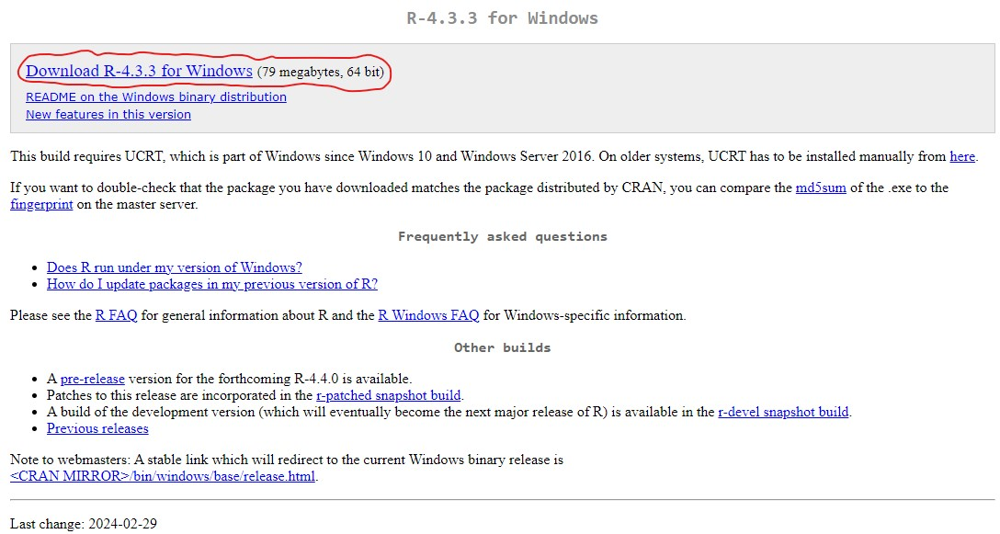
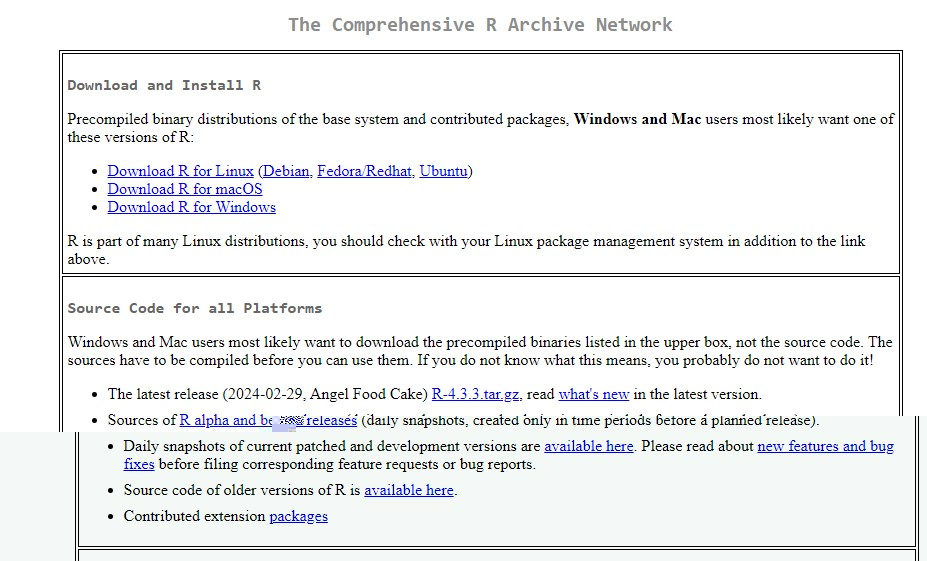
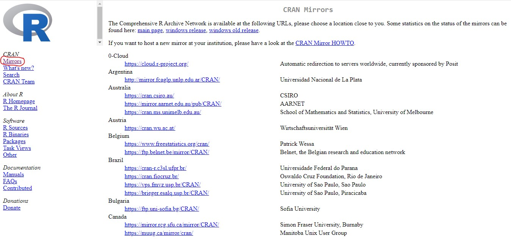
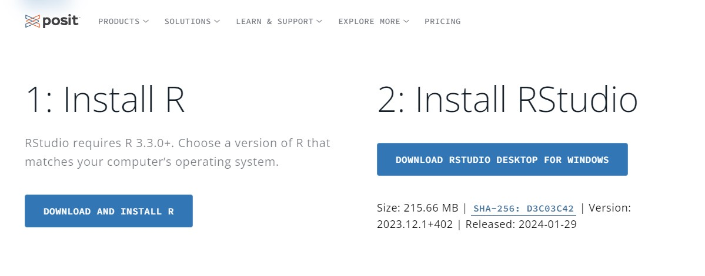
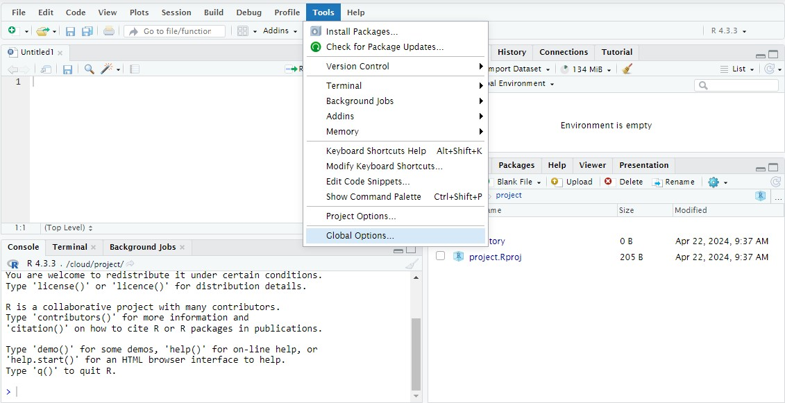

Guía para instalar R y Rstudio
R
Rstudio
Aprende a instalar R y Rstudio y familiarizate con el entorno de trabajo y a cómo personalizarlo

¿ Qué es R y Rstudio ?
R es un lenguaje de programación (Open Source) y gratis utilizado para el análisis de datos. Rstudio es un entorno de desarrollo integrado (IDE) que sirve para manejar R y otros lenguajes de programación de manera más fácil. Ambos son programas muy populares en la academia y principalmente usados por investigadores científicos, profesores y estudiantes, y también por analistas financieros, actuarios y economistas
Instalando R 🚀
Para instalar R en nuestro computador nos dirigimos a la página de R projects: https://www.r-project.org/ . Una vez allí le damos click en CRAN, y aquí nos remitirá a otro enlace en el que buscaremos y seleccionaremos nuestros país o el más próximo.


Luego debemos seleccionar la versión de R para el sistema operativo que esté utilizando, Windows, Mac OS o Linux.
Al hacer clic sobre Download R for Windows seremos dirigidos a otra página. Allí haremos clic sobre install R for the first time (esta opción sale cuando es la primera vez que lo instalas).
En la siguiente ventana, haremos clic sobre Download R 4.3.3 for windows abrimos el archivo y lo ejecutamos en nuestro ordenador.
Instalando Rstudio 💻
Para instalar Rstudio ingresamos a la página https://posit.co/download/rstudio-desktop/. Seguimos y ejecutamos todos los pasos que nos indica el archivo.

Felicidades ya tienes R y Rstudio 😁. Ahora procedemos a conocer el entorno de Rstudio y a cómo podemos personalizarlo.
Personalizando el entorno de Rstudio 🖌️
Cuando abrimos Rstudio observamos el siguiente entorno ⏬ y como cualquier programa tenemos la opción de personalizarlo. Para eso no vamos al menú y seleccionamos Tools y Global Options. En Appearance seleccionamos el tema que nos guste, desde temas oscuros a claros. Una vez seleccionado el tema damos click en Apply.

Personalizando: library (rsthemes)
Puedes ampliar el abanico de temas mediante la library(rsthemes). Para hacerlo instala el paquete de la siguiente manera:
Consola
# instalando paquete
install.packages("devtools")
devtools::install_github("gadenbuie/rsthemes")
rsthemes::install_rsthemes(include_base16 = TRUE)Espero que este post te haya ayudado ❤️
Bibliografía
Rafa. (2020). Qué es R y RStudio? https://gonzalezgouveia.com/que-es-r-y-rstudio/
Ulises, J. (2019). Instalación de R y RStudio (1.ª ed., pp. 2-6).
Cómo citar
Por favor, cita este trabajo como:
O., D. (2024, April 22). **Guía para instalar R y Rstudio**. http://labiocolombianita.com//aprendeR/instalar-R